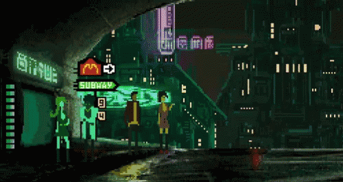
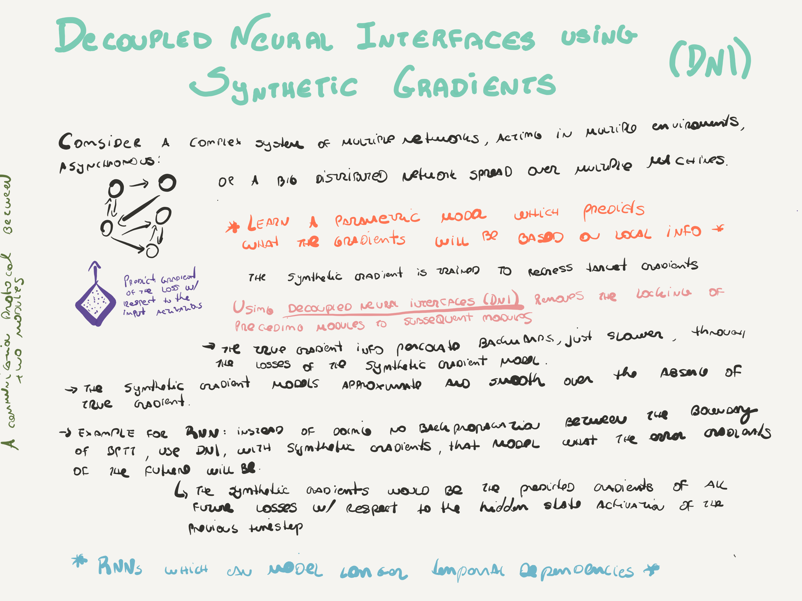

Papers
- Decoupled Neural Interfaces using Synthetic Gradients. New DeepMind's paper reviewing backpropagation, using a modeled synthetic gradient in place of true backpropagated error gradients. Backpropagation is a a bottleneck in DNN, so the idea is instead use an asynchronous estimator, that would be obtained by supervised training of another mini neural network (a fully-connected NN regressor with 0-3 layers). Some speedup was showed in DeepMind’s hardware, but still raising questions on whether this would add any improvement on low-end GPUs setup.
- Full Resolution Image Compression with Recurrent Neural Networks.
- SGDR: Stochastic Gradient Descent with Restarts.
- Mollifying Networks.
- The quest for Artificial Intelligence.
Good'n'old
- How Auto-Encoders Could Provide Credit Assignment in Deep Networks via Target Propagation.
- Training Neural Networks Without Gradients: A Scalable ADMM Approach.
- Beating the Perils of Non-Convexity: Guaranteed Training of Neural Networks using Tensor Methods.
- Spatial Transformer Networks.
- Deep Visual-Semantic Alignments for Generating Image Descriptions.
- Generative Adversarial Nets.
News
- ‘Weiqi’ Players Go With the Flow.
- How Tensors Advance Human Technology.
- Deep Deterministic Policy Gradients in TensorFlow.
- RNNs in Tensorflow, a Practical Guide.
- Landscape of Deep Learning Frameworks.
- End-to-End Deep Learning for Self-Driving Cars.
- Debugging machine learning.
- Text summarization with TensorFlow.
- An introduction to Generative Adversarial Networks (with code in TensorFlow).
- Is BackPropagation Necessary?.
- Under the Hood of the Variational Autoencoder (in Prose and Code).
- Reinforcement Learning and DQN, learning to play from pixels.
Tools
- fastText, Library for fast text representation and classification..
- Image Completion with Deep Learning in TensorFlow.
Videos
- TensorFlow: Demystifying Deep Learning with Visualizations.
- Face2Face: Real-time Face Capture and Reenactment of RGB Videos (CVPR 2016 Oral).
- TensorFlow in 5 Minutes.

Comments !